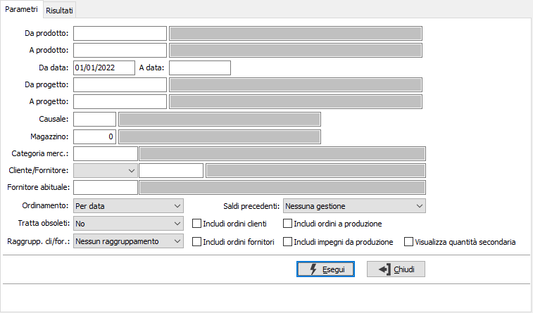
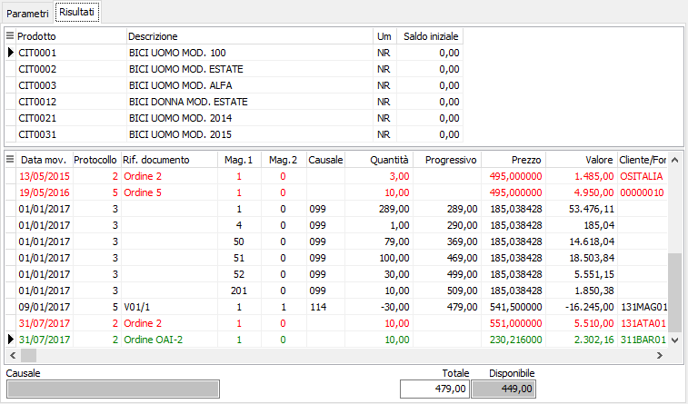
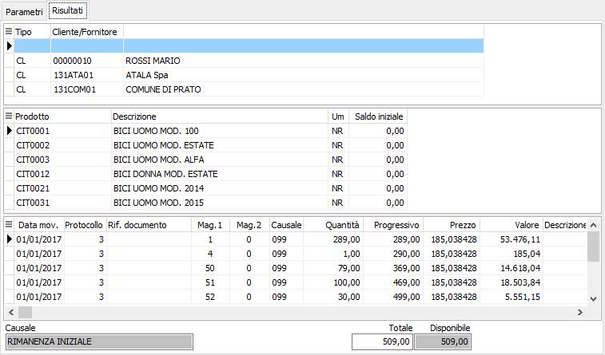
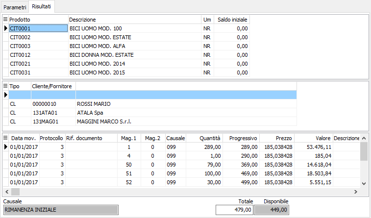

Analisi movimenti
Il programma effettua la visualizzazione dei movimenti di magazzino in base ai parametri inseriti dall’utente. Una volta visualizzati i movimenti, è possibile attivare la stampa della scheda o delle schede utilizzando il bottone Stampa della tool bar.
È possibile visualizzare i movimenti relativi ad uno o più prodotti, ad un cliente o fornitore, limitandone la selezione entro due date indicate dall’utente, ad una specifica causale, ad uno specifico magazzino.
Il programma si articola su due finestre video. La prima, Parametri, consente la definizione dei parametri di analisi.

DA PRODOTTO: eventuale codice dell'articolo, presente in anagrafica Prodotti, da cui si desidera iniziare la selezione dei movimenti di magazzino. Confermando a vuoto, la selezione inizia con il primo prodotto valido. Sul campo è attiva la ricerca (F9) sull’anagrafica prodotti.
A PRODOTTO: eventuale codice dell'articolo, presente in anagrafica Prodotti, a cui si desidera terminare la selezione dei movimenti di magazzino. Confermando a vuoto, la selezione termina con l’ultimo valido. Sul campo è attiva la ricerca (F9) sull’anagrafica prodotti.
DA DATA: eventuale data da cui deve iniziare l’analisi dei movimenti di magazzino per gli articoli precedentemente selezionati. Confermando a vuoto, l’analisi inizia con il primo movimento valido.
A DATA: eventuale data con cui si desidera terminare l’analisi dei movimenti di magazzino per gli articoli precedentemente selezionati. Confermando a vuoto, l’analisi si conclude con l'ultimo movimento valido.
DA PROGETTO: eventuale codice del progetto, presente in anagrafica Progetti, da cui si desidera iniziare la selezione dei movimenti. Confermando a vuoto, la selezione inizia con il primo progetto valido. Sul campo è attiva la ricerca (F9) sull’anagrafica progetti.
A PROGETTO: eventuale codice del progetto, presente in anagrafica Progetti, a cui si desidera terminare la selezione dei movimenti. Confermando a vuoto, la selezione termina con l’ultimo valido. Sul campo è attiva la ricerca (F9) sull’anagrafica progetti.
CAUSALE: eventuale codice della causale di magazzino a cui si vuole restringere la selezione di analisi. Sul campo è attiva la ricerca (F9) sulla tabella Causali di magazzino.
MAGAZZINO: eventuale codice del magazzino a cui si vuole restringere la selezione di analisi. Sul campo è attiva la ricerca (F9) sulla tabella Magazzini.
CATEGORIA MERCEOLOGICA: eventuale codice della categoria merceologica a cui si vuole restringere la selezione di analisi. Sul campo è attiva la ricerca (F9) sulla tabella Categorie merceologiche.
CLIENTE / FORNITORE: eventuale codice del cliente o fornitore a cui si vuole restringere la selezione di analisi. Sul campo è attiva la ricerca (F9) sull’anagrafica clienti - fornitori.
FORNITORE ABITUALE: eventuale codice del fornitore abituale dei prodotti con cui si desidera effettuare la selezione dei prodotti. Sul campo è attiva la ricerca (F9) sull’anagrafica fornitori.
ORDINAMENTO PER: combo box per definire i criteri di ordinamento. Valori ammessi: Per data; Per Magazzino/data; per Causale /data.
TRATTA OBSOLETI: definisce come se includere nell'analisi anche gli articoli obsoleti: Si, No, Solo obsoleti.
Raggrupp. cli/for: consente di effettuare il raggruppamento dei movimenti trattati in base al cliente/fornitore; è possibile raggruppare i movimenti sia per cliente-fornitore/prodotto che per prodotto/cliente-fornitore, oppure non effettuare nessun raggruppamento.
SALDI PRECEDENTI: Definisce se effettuare il calcolo dei saldi precedenti, rispetto alla data di inizio analisi:
Nessuna gestione: non saranno calcolati i saldi precedenti
Solo prodotti movimentati: saranno mostrati i saldi precedenti dei solo articoli che hanno movimenti di magazzino nei limiti di analisi
Anche i prodotti non movimentati: saranno mostrati i saldi precedenti di tutti i prodotti che rientrano nei limiti di analisi anche se non movimentati.
INCLUDI ORDINI CLIENTI: check box per includere nell'analisi anche gli ordini clienti (casella con segno di spunta).
INCLUDI ORDINI FORNITORI: check box per includere nell'analisi anche gli ordini fornitori (casella con segno di spunta).
INCLUDI ORDINI A PRODUZIONE: check box per includere nell'analisi anche gli ordini relativi alla produzione (casella con segno di spunta).
INCLUDI IMPEGNI DI PRODUZIONE: check box per includere nell'analisi anche gli impegni derivanti dalla produzione (casella con segno di spunta).
VISUALIZZA QUANTITA' SECONDARIA: definisce se visualizzare la quantità secondaria del movimento di magazzino
Confermando tramite pressione del bottone Esegui, viene avviata la selezione e richiamata la finestra video Risultati. La finestra video è articolata su due sezioni: la sezione superiore elenca l’articolo o gli articoli selezionati, indicando per ciascuno di essi il codice, la descrizione, l’unità di misura e l’eventuale saldo iniziale (se richiesto).
La sezione inferiore elenca invece i movimenti relativi all’articolo selezionato, che è quello contrassegnato dal segno freccia a destra del rigo nella sezione superiore; i movimenti relativi ad ordini ed impegni vengono presentati in colore diverso.
Cliccando invece sui bottoni anteprima di stampa o stampa della tool bar, si avviano le relative funzioni.

Se è stato richiesto il raggruppamento per cliente/fornitore/prodotto sarà presente una terza griglia di testa che consente di visualizzare i movimenti dei prodotti per cliente/fornitore; anche la stampa riporterà tale raggruppamento.

Se è stato richiesto il raggruppamento per prodotto/cliente/fornitore sarà presente una terza griglia sotto quella dei prodotti che consente di visualizzare i movimenti dei clienti/fornitori dei prodotti; anche la stampa riporterà tale raggruppamento.
